步驟 01 / 17 · J1、J2、J3、B2
先分清楚：框、接頭塊及地板
把零件分袋：J1左右長條、J2前後短條合成承托框；J3是框下面的四個接頭塊；B2是可以取走的上層地板。 〔尺寸依據〕
完成後檢查：本教程只教四柱承托框及上下層接合，不是整架巴士或樓梯的完整教程；先完成並校正下層空殼。 〔依據〕
不要做錯：示意顏色只用來辨認零件，不是實物配色。所有步驟圖均不是1:1裁切紙樣。
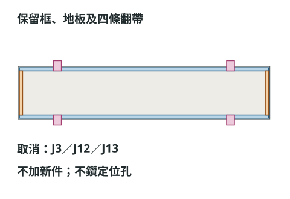
步驟 02 / 17 · J1 ×2、J2 ×2
裁8片長短條，分別疊成2毫米
用1毫米灰卡裁J1：389 × 5共4片；J2：69 × 5共4片。同尺寸兩片疊成一條，壓平待乾，完成2條J1及2條J2。 〔尺寸依據〕
完成後檢查：每條名義厚度都是2毫米，邊緣齊平；不要把四條框全部疊在一起。 〔依據〕
不要做錯：膠層會增加實際厚度；先薄塗、試疊。刀具及鑽孔工具需由有經驗者協助。
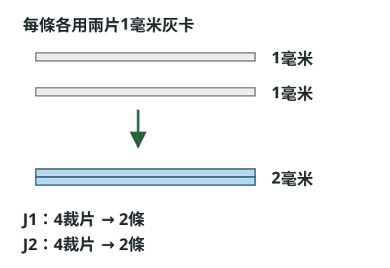
步驟 03 / 17 · J1、J2
平放排成框，短條夾在長條之間
在平面上排兩條J1；把兩條J2放在兩端，夾在J1之間。四條上表面同高，端部對接，不疊角。 〔尺寸依據〕
完成後檢查：框的外廓為389 × 79，內空為379 × 69毫米；這不是393 × 83毫米的車身外廓。 〔依據〕
不要做錯：先在車廂上乾放核對，不要離開車身基準就把歪框黏死；長邊不能切成393毫米。
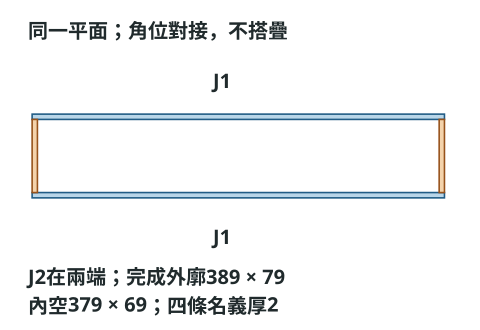
步驟 04 / 17 · J7 ×12、J8 ×24
製作12個L托座及24片三角撐
J7側面托座10片：12.28 × 17.28；端面托座2片：11.86 × 17.28毫米。沿17.28方向距起點12.28處壓摺，餘下5毫米向內摺成水平托翼；每座配兩片J8三角撐。 〔尺寸依據〕
完成後檢查：J8每片為1毫米灰卡，直角邊12.28及5毫米；兩片放在托座兩側，水平翼在上、直立黏面向下。 〔依據〕
不要做錯：這裏的12.28等為平面尺寸顯示值，不是小數疊厚；全部托座先試放，避免窗洞和門洞。
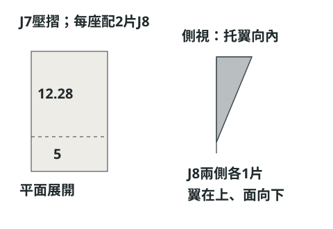
步驟 05 / 17 · 下層空殼、J7、J8
在下層標出框頂及框底高度
以地面z0為基準，標框頂z80.40625、框底z78.40625毫米；兩者相差2毫米。J7水平托翼的上表面對齊框底，直立黏面貼在牆內側向下延伸。 〔尺寸依據〕
完成後檢查：左右各5個托座，建議x49.13、127.73、206.33、284.93、358.61；車頭及車尾各1個，y41.50。共12個，每座配2片J8。 〔依據〕
不要做錯：z高度從地面量，不是從下層地板面量。實際位置遇窗洞或裝飾時，先評估黏接支承，不能貼在空洞上。
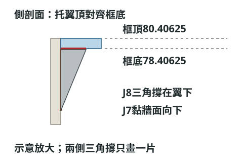
步驟 06 / 17 · J1、J2、J7、J8
把J1、J2固定在托座上
先把整個框放進車廂：J1佔x2–391，y2–7及76–81；J2佔x2–7及386–391，y7–76毫米。確認端部吻合，再把框固定在托座及牆內側。 〔尺寸依據〕
完成後檢查：框頂與兩側牆頂、前後牆頂齊平；框與車身外緣四邊相距2毫米，沒有一角翹高。 〔依據〕
不要做錯：框負責承托上層，不是靠木棒懸吊；四個框角不得疊厚，也不要用厚膠堆填高低差。
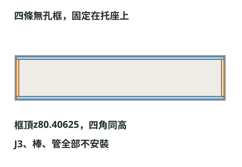
步驟 07 / 17 · 承托框、B2
用同一基準標四個中心
始終用「車頭在左、右側外緣在上」的共同俯視圖。四孔中心是前右(12.28125,5)、前左(12.28125,78)、後右(388,5)、後左(388,78)。把同一中心轉印到框及B2。 〔尺寸依據〕
完成後檢查：x從車身車頭外緣量，y從車身右側外緣量；不是從承托框內緣量。B2翻面量度時須轉回共同方向核對。 〔依據〕
不要做錯：後中心距車尾5毫米，前中心距車頭12.28125毫米，前後不是對稱孔位；不要沿用舊紙樣的孔心。
步驟 08 / 17 · J3的36片裁片
分前後J3：後塊孔不能置中
裁36片12.28125 × 6毫米的1毫米灰卡，分成4組，每組9片。前兩組孔心距前短邊6.140625；後兩組距前短邊9.28125、距後短邊3毫米。 〔尺寸依據〕
完成後檢查：所有孔心在6毫米寬方向置中，即距兩側長邊均3毫米。每組先只在上方7片開約Ø2.6試孔，下方2片保持實心。 〔依據〕
不要做錯：四組都保持車頭在左、車尾在右；不能把後塊翻轉後，仍從錯誤一端量9.28。
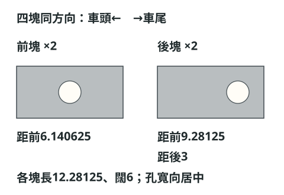
步驟 09 / 17 · J3 ×4
每塊疊9層：上7有孔、底2封住
每組先把7片有孔灰卡同軸疊合，再加2片實心灰卡做底，形成塊頂深7毫米的盲孔。薄塗膠、壓平，避免膠塞孔。 〔尺寸依據〕
完成後檢查：完成塊高9毫米；由塊頂到孔底7毫米，孔底下面還有2毫米實卡，不是9毫米通孔。 〔依據〕
不要做錯：前後孔位不同，疊合時用各自組內的孔定位；不要把前塊裁片混入後塊。
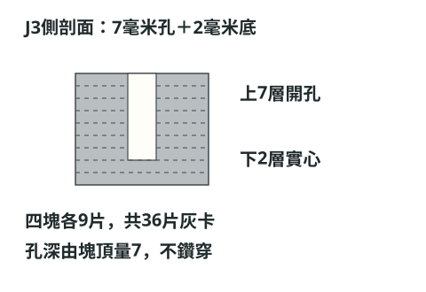
步驟 10 / 17 · J3、J1
四塊J3黏在框底，不與框重疊
承托框先開約Ø2.6木棒試孔。J3孔朝上，逐塊貼在框的底面，孔心與框孔同軸；先用無膠的試棒檢查，再固定J3並移走試棒待乾。 〔尺寸依據〕
完成後檢查：J3頂z78.40625、底z69.40625毫米；從框頂量盲孔總深9＝框2＋入塊7。前門洞頂約z68.125，仍須檢查實際門位。 〔依據〕
不要做錯：J3不是疊在框頂，也不是與框佔同一高度；門洞名義空隙只有約1.28毫米，膠塊、包邊不可頂住。
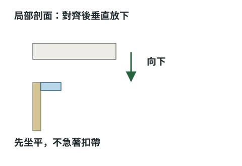
步驟 11 / 17 · J12 ×4、J3
木棒裁14毫米，按7＋2＋5裝入
裁4根Ø約2.5、長14毫米的木棒，修平端部並輕磨倒刺。每根由底端標7及9毫米；入塊7、穿框2，框頂以上露5毫米。 〔尺寸依據〕
完成後檢查：7毫米標記對J3塊頂，9毫米標記對框頂；四根外露高度相同。先試一組，合格再做其餘三組。 〔依據〕
不要做錯：只在入J3固定段薄上膠；框頂以上5毫米及套管內不能有膠，木棒不能與上層黏死。
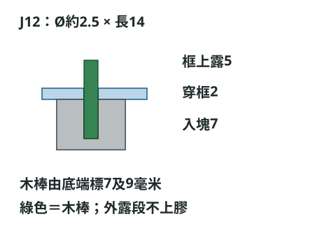
步驟 12 / 17 · B2、J13 ×4
B2開套管孔，套管底齊地板底
B2須為393 × 83、4層1毫米灰卡。依相同四中心先試開Ø4.1孔；套管內Ø2.8、外Ø4，每段長6.25毫米，共4段。 〔尺寸依據〕
完成後檢查：套管穿過4毫米厚B2，底端齊B2底面，上端露2.25毫米；試孔太緊才逐少修至約4.2，先不黏管。 〔依據〕
不要做錯：套管長仍是6.25，不是木棒長14；管底若向下凸出，B2就不能落在承托框上。
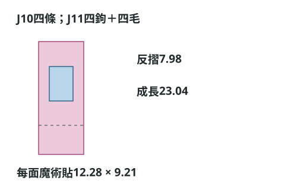
步驟 13 / 17 · 下層四柱、B2及四套管
四棒同時對四管，水平乾合
讓四根木棒同時對準四個套管，B2保持水平往下放，自然落在框頂與牆頂；先不鎖帶、不上膠，任何一角卡住就整塊提起檢查。 〔尺寸依據〕
完成後檢查：帶上完整2毫米上層側牆及最後排椅試位：套管與側牆名義留1毫米，後管與末排椅後緣名義留2.825毫米。 〔依據〕
不要做錯：上層牆及座椅這時只是乾放核對，不提早永久固定；不用鎖帶強拉，不用舊版削薄側牆方法。
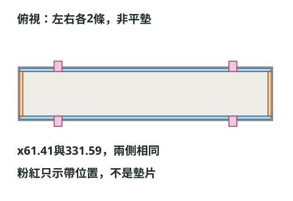
步驟 14 / 17 · B2、J13
標管高後，取下B2才黏管外
乾合合格後記下各管高度，垂直取下B2。只在套管外壁與B2孔壁之間薄上膠，保持管底齊平，按膠水說明待乾。 〔尺寸依據〕
完成後檢查：四管平行、開口暢通，管內及木棒外露段都無膠；B2沒有和下層框或木棒黏在一起。 〔依據〕
不要做錯：不要讓整車合住時灌膠，避免膠流入管內、跨到下層或把上下兩層黏死。
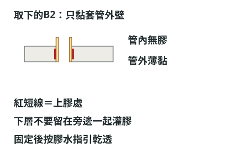
步驟 15 / 17 · B2、承托框、四柱接頭
確認接合面沒有刻意留縫
乾透後再次平放上層。B2底面應接觸承托框與牆頂，木棒在管內插入5毫米，管頂比木棒尖高1.25毫米。 〔尺寸依據〕
完成後檢查：1.25毫米是套管內部的軸向餘量，不是上下兩層車身之間的間隙；承重位置是框及牆頂，木棒只作定位。 〔依據〕
不要做錯：四角不平時先查管底是否凸出、棒長是否不一、孔位是否偏，不能把四角用膠墊或鎖帶拉到平。
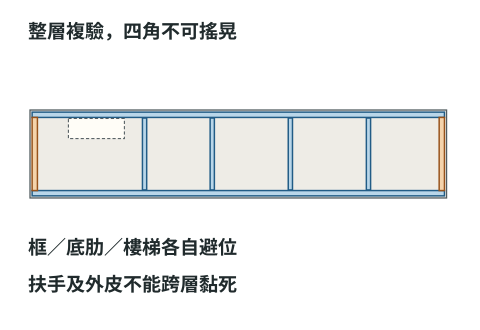
步驟 16 / 17 · 完整接頭、J10/J11鎖帶
鬆四帶，垂直提至少7毫米
先解開全部4條鎖帶，雙手托住上層兩端底部，均勻垂直提至少7毫米；四棒完全離管後，才把上層水平移開。 〔尺寸依據〕
完成後檢查：若上層已裝11.053125毫米高的豎肋，取下後放在至少12毫米高的邊緣墊塊上，避開底肋；有膠層或檯面誤差則用更高墊塊。 〔依據〕
不要做錯：不抓車頂提整車、不逐角扭拔；樓梯及斜扶手只固定下層，上層孔邊欄杆只固定上層，不能跨縫黏住。
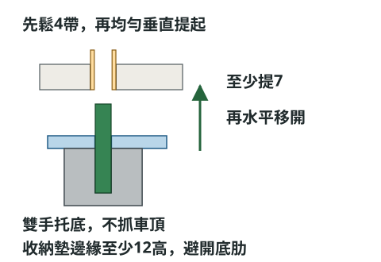
步驟 17 / 17 · 整個接頭組件
反覆20次試拆，才繼續永久內裝
以完整牆板、末排椅及樓梯乾放核對干涉，反覆試拆20次。每次檢查四角是否自然平落、管有否鬆、棒有否倒刺、框及塊有否裂；合格後才永久固定後續內裝，再帶齊組件複驗。 〔尺寸依據〕
完成後檢查：試件合格才批量製作；成功拆合不等於完成強度驗證。這是未經實物試製的計算方案，高度跟長度倍率0.9825仍是工作假設。 〔依據〕
不要做錯：原A4/A3裁切紙樣及PDF不修改；新外框與新孔位須按393 × 83毫米實作尺寸另行量度，不混用40厘米歷史數字。
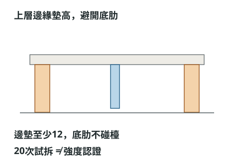